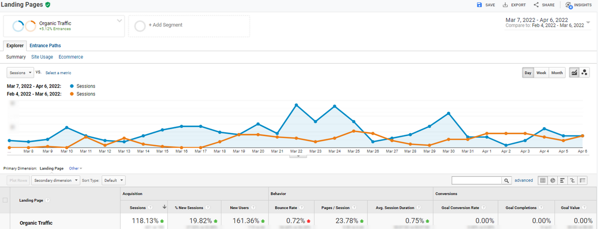

Alveda — платформа, що надає послуги онлайн-консультацій із докторами Аюрведи. Це давня система індійської медицини (так звана система альтернативної медицини), вважається додатковою ведою «Атхарваведи» та заснована на індуїстській філософській системі санкхья.
Alveda — молодий проєкт, що дозволяє англомовним пацієнтам США мати прямий зв’язок із найкращими фахівцями Аюрведи з усього світу на одній платформі лише в кілька кліків. Клієнти можуть отримати онлайн-консультацію у будь-який зручний час щодо великої кількості захворювань. Alveda пропонує кілька тарифних планів як індивідуальних, так і для сім’ї. А також систему зручних пекеджів, орієнтованих на певні захворювання для довгострокової терапії під постійним наглядом лікаря.
Нашою метою було збільшити пошуковий трафік і, відповідно, підписки пацієнтів та реєстрацію лікарів.
До співпраці з нами клієнт пробував платну рекламу, але отримував неодноразовий бан Google через специфічну тематику.
Складність просування полягала в тому, що це ніша медицини, тим паче нетрадиційної, і потребує особливого підходу з урахуванням YMYL-тематики та E-A-T-факторів. Йдеться про підвищені вимоги Google до сайтів, тематика яких може впливати на здоров’я або гаманець користувача.
Читайте докладніше про особливості SEO-просування сайтів медичної тематики.
Крім того, Alveda — новачок на ринку нетрадиційних медичних онлайн-послуг. Є кілька конкурентів, включаючи як великі платформи, так і конкурентів, які мають ще й офлайн-представництва.
Крім того, Alveda — новачок на ринку нетрадиційних медичних онлайн-послуг. Є кілька конкурентів, включаючи як великі платформи, так і конкурентів, які мають ще й офлайн-представництва.
На старті ми проаналізували нішу та основних конкурентів, а також вивчили тематику проєкту:
Зараз сайт знаходиться на етапі впровадження технічних аудитів, розширення структури (підключена команда дизайнерів) та реалізації інших рекомендацій.
Вже за стартові 2,5 місяці співпраці вдалося досягти перших результатів:
Вже за стартові 2,5 місяці співпраці вдалося досягти перших результатів:
Почитайте ще кілька прикладів роботи з нестандартною тематикою: